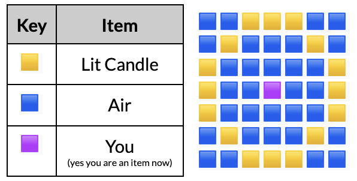

The Nyctocosm is a
datapack that expands the Deep Dark
by allowing the Ancient City portal to be activated, leading to a new dimension with custom biomes, weapons, and bosses.
A new feature added in this datapack is the ability to cast
spells, which require various ingredients
and perform different tasks.
The Nyctopedia is a great reference for the
datapack's features, but this page will condense the concept of spells into a single article. The article may also serve
as a quick-start guide for new players
looking to start their journey into the datapack.
Spells 101
1. Preparation
The Seelic Scythe is the figurative gateway
into the Nyctocosm world. Crafting it requires the player to enter an
Ancient City found in the
Deep Dark, which is commonly located
under snowy mountains. Its recipe requires 3 Echo Shards
(found occasionally in Ancient City chests) and 2 Sticks as shown:
Like all weapons in the datapack, the Seelic Scythe cannot be enchanted, but is unbreakable and comes with special
abilities. One of them is a right-click ability that instantly teleports the player 6 blocks forward and damages entities
in its trail. However, this deals some damage to the player as well.
The scythe also harvests the soul of any mob it kills, which lingers for a few seconds and can be collected by standing
close to the soul particles with an empty bottle to obtain a
Soul Bottle, which is stackable. This item is
used in one method of casting spells, and for activating the
Dias of Incultation for the second.
This second method requires a bit more resources (primarily a Beacon or Nether Star from a
Wither) but is more useful overall. The
Planar Coil also stores souls when held in the
offhand slot and is acquired with 20 Seelic Essence
(which costs 20 Soul Sand and 5 Blaze Rods) and 4 Golden Ingots.
These materials can be traded in the Dias of Incultation (which is really just an invisible custom villager). Building it
requires 4 Quartz Blocks, 4 Quartz Stairs, 4
Waxed Cut Copper Slabs, 1
Beacon, 1
Anvil, and a
Lit Candle Ring as seen below. To activate the Dias of Incultation, right-click just above the
anvil with a Soul Bottle.
After obtaining the Planar Coil, hold it in the offhand to accumulate souls harvested from the Seelic Scythe. There is no
limit to the amount of souls that can be collected.
2. Spell Planes
Spells require two ingredients: A
Spell Plane
and the core spell material. The first method of casting spells requires 25 lit candles arranged in a 7x7 circle like so:

Building schematic for a Lit Candle Ring.
Candles can be lit with flint and steel or a flaming arrow.
Oh, you need the recipe for a candle? Here it
is.
The player must right-click a Soul Bottle while inside the circle for the Spell Plane to appear. Note: the soul will be
consumed on use, and the Spell Plane will disappear if the player leaves the circle.
The second spellcasting method involves the
Planar Coil. Holding it in the offhand and
right-clicking with an empty hand while sneaking consumes a soul and creates a Spell Plane at the player's feet. Once
again, leaving the circle will cause the plane to disappear.
3. Casting Spells
To cast a spell, simply drop the corresponding material while in the Spell Plane. The most important spells are
Resonance (Echo Shard), which
activates the Ancient City portal when aimed at it,
Luminescence (Glowstone),
which grants immunity to the Blindness effect applied when in the Nyctocosm in low light levels, and
Evanescence (Eye of Ender),
which allows the player to teleport to their spawn point and escape the dimension.
A complete list of spells, their materials, and their effects are shown in the table below.
Note: These numbers come from the wiki and have not been tested. Some, like duration, may not be accurate
in-game (actual times are ~10% of the displayed time in seconds).
You thought we were done with spells, huh? That's only half of what The Nyctocosm has to offer in terms of
spells. The next section will cover much more advanced topics, but these will require extensive exploration of the new
dimension, so make sure you are familiar with spellcasting and the 3 core spells before you proceed.
For the most part, the new dimension will be sparse and uneventful. Tents with lore books and dungeon-level loot are scattered in
the Desert of Rime. The
Cimmerian Gorge may contain a machine-like
structure with a similar chest. Beware of
Nightmare Apparitions, which frequent the
Night Wastes and spawn when the player has the
Blindness effect, and Death Walkers, which are often
found in the Cimmerian Gorge and sometimes appear behind the player.
While the 3 custom bosses can be summoned here, the dimensional gloom may hide a rare and unassuming structure with treasure far
below the surface...
Spells 102
1. Crypts
After entering the portal and exploring the various biomes of the Nyctocosm, a "Stonehenge-like structure" might be
visible above ground in the Night Wastes.
Digging underground near the monument will lead to the
Crypt, a stronghold-like structure made of stone
bricks.
When entering the structure, say hi to Tony, the invulnerable cat who will appear and leave behind a lore book of its own.
The Crypt consists of many rooms connected by winding tunnels, but chests with valuable loot can be found here. While
the loot is very similar to Ancient City chests, with
Enchanted Golden Apples, diamond leggings, and
Swift Sneak, each box has a random custom artifact, with
the "dream center" chest containing 3 guaranteed, powerful artifacts: The
Dream Scroll of Protection, the
Feather of Levitation, and the
Tablet of Transposition.
Most rely on a system explained in the next section.
2. Hypertraces
Hypertraces make up a mysterious system stemming
from a side effect of using spells. When dealing magic damage or casting a spell, the player has a 15% chance to create
a Hypertrace, an orange floating halo that lingers for a few seconds before disappearing.
To pick up a Hypertrace, right-click the halo or sneak + right-click to pick up all created Hypertraces. This adds to the
player's "Hypertrace Charge", which cannot be seen but is used by some artifacts and has a maximum of 15 (starts at 5,
but the method of upgrading this number is unknown).
Standing close to (within 6 blocks) or destroying Hypertraces (left-click, or sneak + left-click for all) also activates
some artifacts' abilities. More information is shown in the next section.
3. Artifacts
Found in Crypt chests, these custom utility items empower spellcasting or grant special effects. A complete list of
Artifacts and their conditions is shown below.